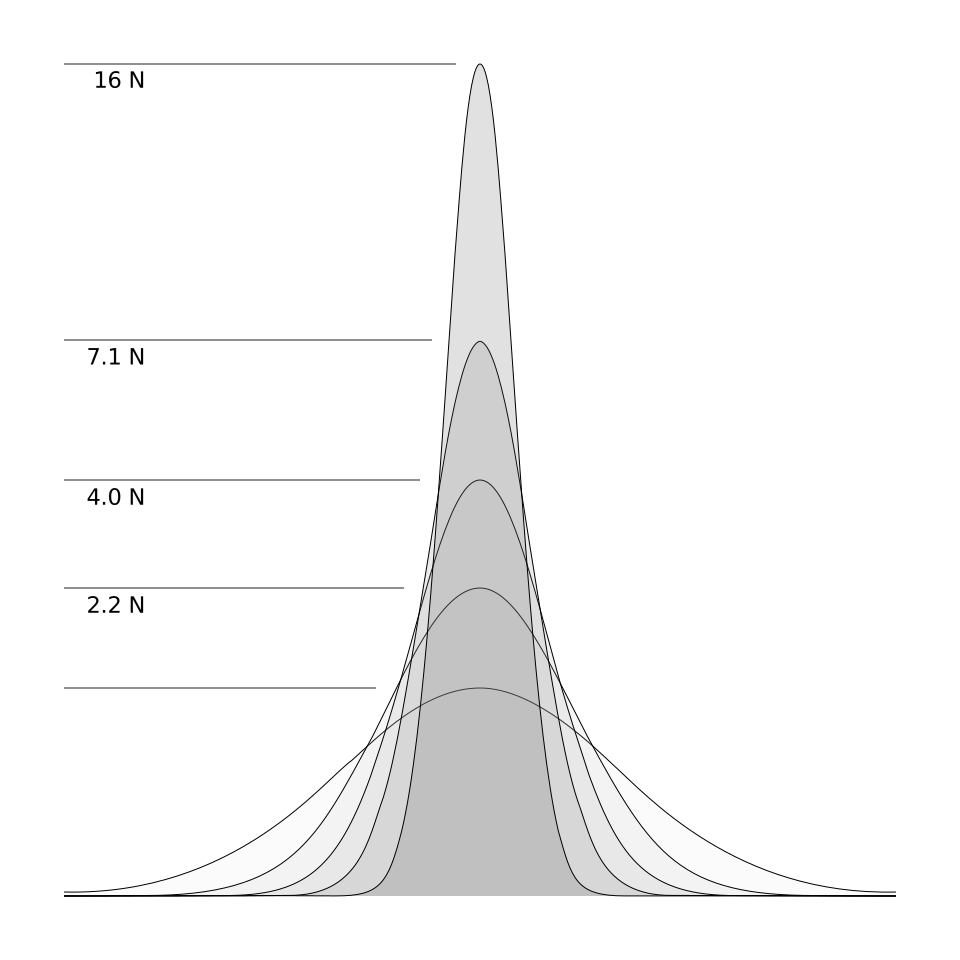

Sideways statistics
Another way to look at statistical significance
Background
This page is the result of me wanting to understand these four characteristics of linear regressions:
- confidence level / alpha
- statistical power / beta
- sample size
- effect size
I wanted to know not only what they are, but how they are related to each other, since they all come up in discussions of statistical significance. More specifically, in discussions of the use of null-hypothesis significance testing as part of empirical studies in the social sciences. I've been obsessed with null-hypothesis significance testing for a while now, to the point where it almost derailed my Master's thesis in technical communication (“Finding Research Value – the metrics and methods for evaluating research”).

Figure 01 – Relationship of α, β, sample size, & effect size
To be able to make rational arguments about null-hypothesis significance testing, I needed to understand those four inter-related characteristics of linear regressions. But none of the explanations I was reading in a variety of books were working for me. Since I'm a visual thinker, I came up with a way to represent the relationship between those four characteristics graphically.
I think that I understand them now, but the best way to check if you understand something is to try to explain it to someone else. So, these web-pages are an attempt to explain the graphics I've come up with, and how I use them to understand the four significance-related characteristics of linear regressions.
Caveat emptor …
I've been a chemist, a quality manager, a copy editor, and a specialty gas consultant, and I'm aiming to be a technical writer, but I am not a statistician. You should confirm the validity of anything you read here before applying it. Especially since my interest in the use of these four characteristics of statistical analysis is a narrow one. While I may not be wrong in my understanding of how they apply to linear regressions in the social sciences, my ideas about them may be way off-base in regard to other applications. ←
Sideways statistics show the relationship between two probability curves
I've called this “Sideways statistics” because of the graphics I use to help myself understand the four significance-related characteristics of linear regressions, such as Figure 01.
Figure 02 – normally distributed probabilities
To explain how I got to the graphics such as in Figure 01, let's start with a graph of a standard probability curve, Figure 02 (adapted from a graphic on Wikimedia Commons). I'm assuming you've seen something like it before. If you haven't, you might want to take at look at the Probability Distributions Primer before continuing.
Figure 03a – splitting the total area under the curve into two proportions
The horizontal axis comprises the possible values for some measure. The vertical axis is the probability of getting each value on the horizontal axis when you make a measurement. Typically, however, we aren't interested in the probability of a specific value, but rather we're interested in the probability of getting a result in a range; in other words, a result that is “greater than or equal to” or that is “less than or equal to” some value.
The probability of getting a result that is bounded by a specific value is equal to the total area under the curve on the appropriate side of that value. In Figure 03a, the the shaded area is the probability of getting a result that's “less than or equal to” the bounding value.
Setting the boundary for alpha
In the case of linear regression, the probability that comes up most often is the “p value”, a.k.a, “alpha”, “confidence level”, etc. In the social sciences, the most common value for alpha is 5%, often reported as “p<.05”. The shaded area in Figure 03a is 5% of the total area.
When you're using a null-hypothesis significance test to analyze a sample, a confidence level of 95% means that there is a 95% chance that population correlation is not zero. You don't precisely know the population correlation because you measured and analyzed only a sample of the population, instead of the entire population. So, what you've found is the sample correlation, and the population correlation is related to the sample correlation by a probability curve.
Figure 03b – turning a probability curve sideways
In Figure 03a, we'll say that the mean value of the probability curve is the value of a sample correlation of some analysis. The probability curve therefore shows what values the population correlation may have, based on the sample correlation value. In Figure 03a, 5% of the total area under the curve is bounded by a measured value of zero. So, there is a 5% probability that the population correlation is “less than or equal to” zero. (That's not quite the same as the “null” in “null hypothesis significance testing”, but for now we'll treat it like it is. Everything still works out properly if we do; see: “Sideways Type I and Type II errors – Symmetry”.)
You can take the previous example graphic and stand it up on end, as is shown in Figure 03b. Doing so puts the zero/null line at the bottom of the graph, and makes the horizontal axis the probabilities of the curve. Meanwhile, the vertical axis becomes the value of correlations.
Why is this is a useful convention? Because when you're designing a study that will use a linear regression analysis, there are two probability curves involved in the experimental design, and the “sideways” arrangment makes it easier to see the relationship between them, because we can place them next to each other, such as in Figure 04.
Two probabilities: alpha and beta

Figure 04 – relating two probability curves
Two probabilities: alpha and beta
The first curve that's involved in the design of a statistical experiment describes the sample correlation you're likely to find when you do the analysis. Its location is determined by the population correlation. The second curve describes the population correlation. Its location is determined by the sample correlation that you get from your analysis.
The more common way to refer to these two probability curves is through the characteristics “alpha” and “beta”. As was mentioned above, alpha is also referred to as the “p value”, or the “confidence level”, etc. Alpha is a proportion of the population probability curve.
The other characteristic, beta, is a proportion of the sample probability curve. Often, “beta” is described as the proportion of the sample probability curve that is not the “statistical power”. More simply, ‘1 - β = statistical power’. In sideways statistics, it's easier to just say that the sample probability curve will be divided into two parts. One of those is beta, the other is the statistical power. (And that's why they always add up to 100%—because each is just one of two proportions of the total area.)
But I don't know the population correlation, do I? …
It may seem somewhat confusing to talk about the population correlation as defining the location of the sample probability curve, since if you knew the exact population correlation, you wouldn't need to be doing a linear regression to demonstrate what it is. The thing to keep in mind is that the population correlation exists irrespective of whether or not you know what it is, since that correlation is an intrinsic property of whatever phenomenon it is you're studying. So, in practice, you typically come up with some way to estimate the population correlation, and then use that estimate to find the beta and the statistical power of your analysis. ←
So, the major reason for making these example graphics “sideways” is to make it easier to understand the relationship of these two probability curves. By making them vertical, we can put them “back-to-back” and therefore see how the characteristics of alpha, beta, sample size, and effect size are related to each other.
The two probability curves in more detail
The last part of the previous section, that discusses probability curves, along with alpha and beta is not, for me at least, intuitively obvious, so let's go over it again. (If it already makes sense to you, you might skip ahead to ‘Confidence level & statistical power’.)
Sample correlation → Population probability
Figure 05 – Sample correlation bisects population probability curve
Sample correlation → Population probability
Let's say you measure a variety of characteristics of a presumably representative sample of a population. You can do a linear regression analysis of the measurements, and precisely calculate the correlations between the characteristics you measured. But, your results are only precise descriptions of the sample. They aren't precise descriptions of the population, because there is always some amount of error, some amount of potential discrepancy, between the mean value of some characteristic for a sample, and the mean value of that characteristic for the population.
So, you can't precisely determine the correlation between characteristics for the population. But what you can determine precisely is the probability that the population's correlation falls within some range of values. In the case of null-hypothesis significance testing, your goal is to calculate the probability that the population correlation is not zero. When you report that a correlation is, e.g., “statistically significant at ‘p<.05’”, you're reporting the probability that you calculated—based on the sample correlation—that the magnitude of the population's correlation is greater than zero. In the case of ‘p<.05’, that probability is 0.95, in other words, 95%.
You can think about that probability calculation as being a probability curve that you draw around the sample correlation. In Figure 05, the horizontal line that splits the curve marks the value of the sample correlation. The probability curve itself, however, describes the correlation of the population.
This is an important distinction to understand. In Figure 05, the straight line is about the sample. The curve is about the population.
Population correlation → Sample probability
Figure 06 – Population correlation bisects sample probability curve
Population correlation → Sample probability
Figure 06 is the opposite of that. The straight line is about the population. The curve is about the sample. They are both on the opposite side of the vertical axis from the previous graph because they show the opposite relationship.
What is that relationship? It's the probability of finding some particular value for a sample correlation, based on what the population correlation is. Even though you may not be able to ever directly measure the population correlation, it does exist and it does have some value. And that value establishes the probabilities of the sample correlation value you'll find.
Population probability ↔ alpha
Sample probability ↔ beta
The sample probability curve is described by beta, and/or “statistical power”. The population probability curve, which was in Figure 05, is described by alpha, a.k.a. “confidence level” or “p value”.
Relation of alpha and beta
Figure 08
Relation of alpha and beta
Beta describes the sample probability curve by telling you where it is in relation to the population probability curve. This is why it's useful to consider the two probability curves back-to-back, which is what we can do once we turn things sideways. In null-hypothesis significance testing, alpha tells you where the population probability curve is in relation to the null line. But when testing for significance against some other hypothesis, alpha becomes like beta, in that it tells you where the population probability curve is in relation to the sample probability curve.
Figure 08 is an example of how sideways statistics shows the relationship of alpha and beta for a statistical experiment that uses a null-hypothesis significance test. The curve on the right is the population probability curve, and the shaded area is equal to alpha. The curve on the left is the sample probability curve, and the shaded portion of its area is equal to the statistical power of the analysis.
On the right side of the graphic, which has the population probability curve, the value of alpha is equal to the area bounded by the null line, because of the symmetry of Type I errors in a null-hypothesis test. (See: Sideways Type I errors.) Any sample correlation that is higher than the line bisecting the population probability curve would be statistically significant at “p<.05”.
On the left side of the graphic, which has the sample probability curve, the area between that curve and the vertical baseline is divided into two portions by the line that marks the minimum statistically-significant sample correlation. The shaded portion of its area above that line equals the statistical power of the analysis. The unshaded area equals beta. If we assume that the unshaded portion of the area is 40% of the total area, then beta is 0.40, and the statistical power is 60%. This means that if we take a sample of that population and test it for a correlation, there is a 60% chance that we will find a statistically significant correlation (at “p<.05”).
In other words, the fact that 60% of the sample correlation probability curve is higher than the minimum statistically significant sample correlation value (p<.05), means that there is a 60% chance that the sample correlation we find will be a value that is equal to or greater than that minimum value. The relationship of the two probability curves shows the relationship of alpha and beta (which is the inverse of statistical power).
Sample size shapes the probability curve

Figure NN
The shape of the probability curves in sideways statistics is influenced by the number of cases in the sample. For relatively small sample sizes, the probability curves will be short and widely spread. For large sample sizes, the probability curves will be tall and narrow. Figure NN shows the narrowing shape of a probability curves as the sample size rises.
In a study that uses a null hypothesis, alpha describes where the population probability curve is in relation to the null line. The exact middle of that curve marks the minimum statistically significant sample correlation. Since sample size determines how narrow or wide a population probability curve is, together alpha and sample size determine the magnitude of the minimum statistically significant sample correlation for a study. (See: The impact of sample size.)
Effect size – final piece of the puzzle
Alpha determines the placement of the population probability curve. The shape of the population probability curve is determined by sample size. Between sample size and alpha, the minimum sample correlation that is statistically significant is determined. And that minimum significant correlation will divide the area under the sample probability curve and thus define the statistical power of the analysis.
What defines the placement of the sample probability curve on the graph is the effect size (a.k.a., “size of effect”). Which, up until now, I've referred to as simply “the population correlation”, in order to maintain the symmetry between the names for things on the left and right side of a sideways graph. The effect size isn't normally referred to as the population correlation, because if you're doing a significance test, you'll never precisely know what the population correlation is. The effect size is an estimate of the population correlation you expect to exist. Typically that estimation is done using previous studies of similar phenomena.
The sample population curve is placed so that its centerline matches the effect size. Once that's done, the statistical power for the analysis is determined, since now you can find out where the minimum significant correlation slices through the area under the sample probability curve.
Conclusion
Sideways statistics uses the relationship of the two probability curves to show how alpha, beta, sample size, and effect size are interlocked. The shape of the curves is determined by the sample size. The placement of the curve on the right is determined by alpha. The placement of the curve on the left is determined by beta. And the effect size determines the placement of the curve on the left. If any one of those characteristics changes, then at least one of the others must also change, because of the way the curves, their bisecting lines, and the null line are all woven together.
Sideways statistics can also be a tool to help improve our understanding of the issues related to significance testing of linear regressions. The following pages cover some of those issues:
-
The interaction of alpha and beta – link
-
The impact of sample size – link
-
The impact of effect size – link
-
Is a result that's insignificant compared to null always unimportant? – link
-
How to do an upper-bound significance test – link
{kind=link}